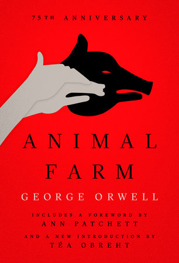

Animal Farm was written by George Orwell and published in 1945. This novel is an allegory - even though it is set on a farm and stars a cast of farm animals, it reflects the events of the Russian revolution of 1917. The animals are all clever representations of Russian politicians, voters and workers.
